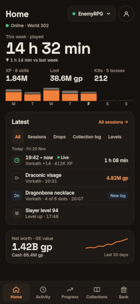
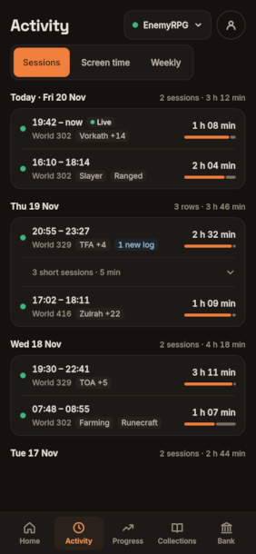
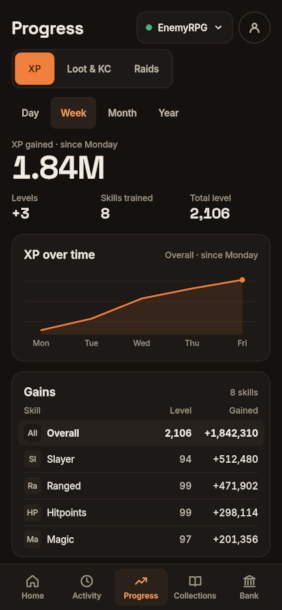
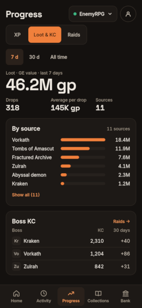
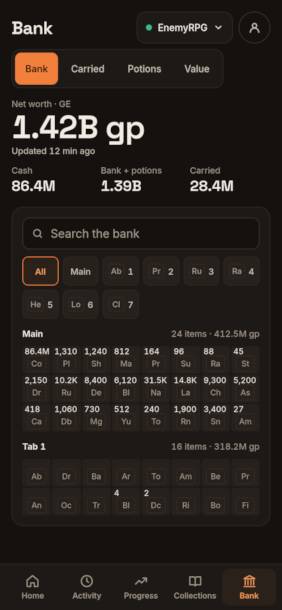

Fireside
A self-hosted tracker for Old School RuneScape: a RuneLite plugin collects your own data and sends it to a dashboard on a server you run yourself.
No central service and no telemetry. Free and open source.
Around the dashboard
It works in any browser, and you can add it to your phone's home screen.
-

Sessions: every session by day, with what you did in it. -

XP: the week’s gains, overall and per skill. -

Loot and KC: loot value by source, and boss kill counts. -

Bank: net worth and every tab, with search.
What it tracks
-
XP and levels
XP and level for every skill, recorded while you play.
-
Loot and boss KC
Drops with their value, kill counts, kill times and personal bests.
-
Raids
Raid completions and purples, for you and your team, without anyone's name.
-
Collection log
Synced from RuneProfile, an optional source you turn on per account.
-
Pets
Pet drops, with a best guess at where each one came from.
-
Quests and diaries
Every quest and miniquest, quest points and finished diary tiers.
-
Bank
Your bank as the game has it, with tabs, history and net worth.
-
Sessions and screen time
Logins, world hops and AFK time, added up per day and week.
-
Weekly summary
One page per week with what you did and what you gained.
-
Several OSRS accounts
Look at one account at a time, or at all of them together.
-
Several users
Invite friends with a link. Everyone sees only their own data.
-
Themes
Ember, Dark and Light.
How it works
-
RuneLite plugin
Collects data about your own accounts while you play. It sends nothing until you enter a server URL and an API key and turn on Send data.
-
Your own server
One Docker container with a SQLite database, run by you or by a friend you trust. Your data is stored in its database.
-
Dashboard
The same server shows your data in the browser, on a computer or on your phone, behind your own login.
- There is no central Fireside service. The plugin talks to the server URL you enter, and to nothing else.
- Other players' names, the text of chat messages and your Jagex login are never sent.
- Events wait in a queue on disk until the server confirms them, so nothing is lost while it is down.
- The server backs up its database every day and makes no outside calls unless you turn one on.
Getting started
For players
You need access to a Fireside server: your own, or one a friend runs.
-
Get an invite link
Ask the admin of the server for an invite link. A link works once.
-
Create your user
Open the link in a browser and pick a username and a password. Turning on two-factor authentication under Settings → Profile is a good idea.
-
Create an API key
In the dashboard, go to Settings → API keys. If the admin has not allowed that for your user, they create the key for you.
-
Install the plugin
In RuneLite, open the wrench icon → Plugin Hub and search for “Fireside”. The plugin is not on the Plugin Hub yet. Until it is approved, see the plugin repository.
-
Connect the plugin to the server
In the plugin's settings, enter the server's address as Server URL (without
/api/v1), paste your API key and turn on Send data.Server URL (example)https://fireside.example.comThen open the plugin's side panel and press Test connection. It should say Connected.
For server admins
This is the short version. The details are in the README and the remote access guide.
-
Requirements
- Linux with Docker Engine (rootful) and the Compose plugin. Rootless Docker is not supported.
- For access from outside your own machine: a domain on Cloudflare. The free plan is enough.
-
Install with Docker
Shellgit clone https://github.com/enemyrpg/fireside.git cd fireside mkdir -p data docker compose up -d --build docker compose psAfter a few seconds the status is
healthy, and the dashboard answers onhttp://127.0.0.1:3100, on that machine only. -
Create the first admin user
A new server has no login. Setting a password for the built-in
adminuser turns login on. The command asks for the password, at least 12 characters.Shelldocker compose exec fireside fireside users set-password admin docker compose exec fireside fireside users rename admin <name>Log in and turn on two-factor authentication under Settings → Profile.
-
Make it reachable
For phones and friends' plugins, Fireside goes behind Cloudflare Tunnel: no open ports, and the server keeps listening on
127.0.0.1. After creating the tunnel and saving its token as the guide describes, add this to.envand rundocker compose up -d:.envPUBLIC_URL=https://fireside.example.com TRUSTED_PROXY=cloudflare COMPOSE_PROFILES=tunnelThe tunnel, its token and the Cloudflare settings are covered step by step in the remote access guide.
-
Invite people
First write who runs the server under Settings → Server → Instance text. Then go to Settings → Users → Create invite, choose how long the link works and whether the person may create their own API keys, and send them the link.
-
Manage API keys
Your own keys are under Settings → API keys, other users' keys under Settings → Users. The command line does the same:
Shelldocker compose exec fireside fireside keys create "Gaming PC" docker compose exec fireside fireside keys list docker compose exec fireside fireside keys revoke 2 -
Update
Shellgit pull docker compose pull --ignore-buildable docker compose up -d --buildThe server backs up its database daily to
data/backups. Copy that folder to another disk or machine as well.